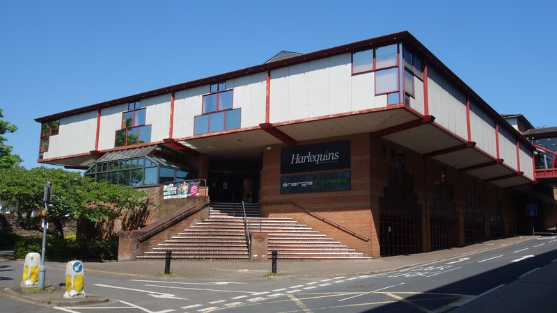
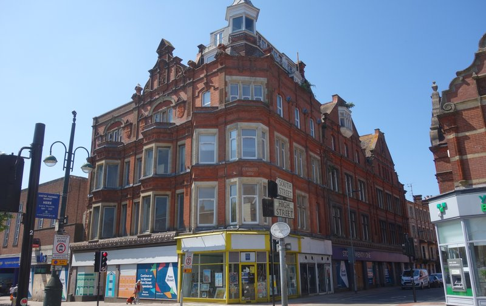
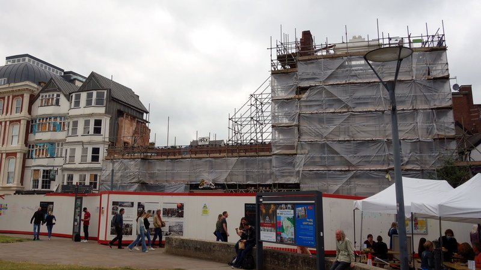
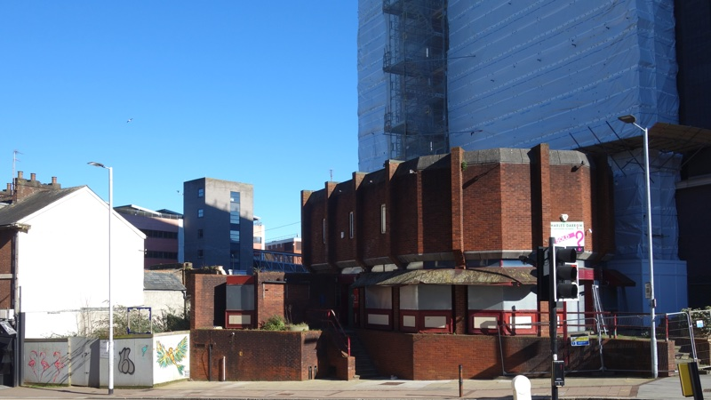
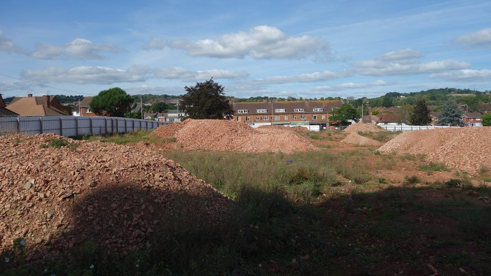
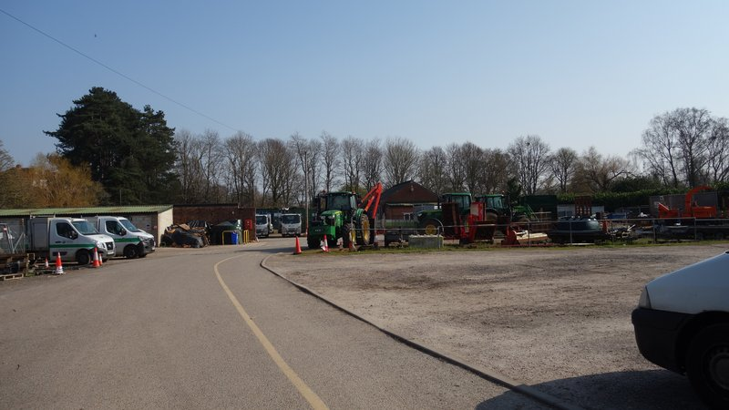
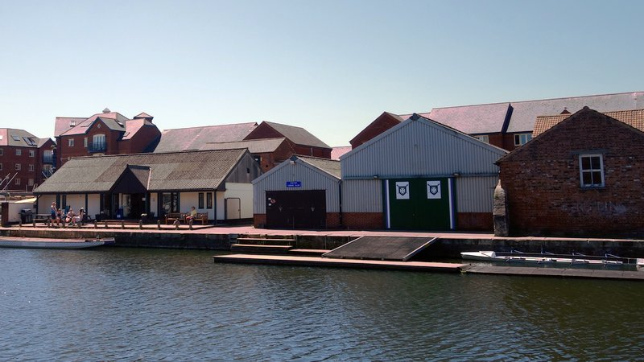
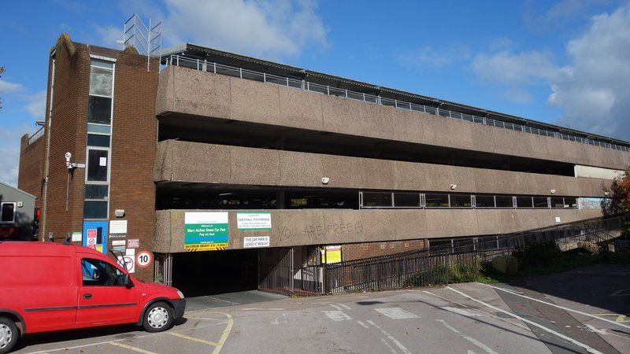

Exeter City Council intends to change the charges it levies on most new development towards the cost of infrastructure that is needed to mitigate its impact.
Community infrastructure levy charges are used to pay for community grants, habitat impact mitigation and larger projects like Marsh Barton railway station. Of the £10.84 million committed to significant infrastructure since the council introduced its levy in 2013 nearly three-quarters has been spent on St Sidwell’s Point leisure centre while another £840,000 was used to reconfigure a road junction at Sandy Park.
The council intends to introduce differential charging rates for Purpose Built Student Accommodation (PBSA) and co-living, and for flats that are built for rent and sale, despite each pair having essentially identical development forms and there being nothing to prevent students renting co-living rooms, or flats that are built for sale being rented out.
It employed external consultants to produce viability evidence and a background report to support its new charging proposals, imposing a differential rates typology in line with council development policy objectives and excluding assessment of other residential or retail levy charges despite these development forms contributing a significant proportion of levy revenue.
It also ignored its own statutory infrastructure funding statement and the new local plan’s evidence base and emerging policies, relied on a private consultation with vested interests for its viability assumptions and ignored government guidance on setting levy rates.
Its new levy charges will not bring in any more money than the current charges. They will contribute only 27% of an infrastructure funding gap of at least £93 million, leaving Exeter far short of the new infrastructure it needs.
The council opened a consultation on its proposals as the Christmas holiday period began immediately after an attempt by opposition councillors to prevent them going ahead in their current form. It is a model of obfuscation and has only been publicised once.
The new levy charging schedule, with any revisions that may be made following the consultation, will be submitted for public examination later this year then come into force if approved.
This is the first time Exeter City Council has reviewed its community infrastructure levy charges since they were introduced after the adoption of its 2012 Core Strategy.
This document finalised the current local plan, which also incorporates policies saved from the 1995-2011 Exeter Local Plan First Review, county mineral and waste plans, supplementary planning documents and a neighbourhood plan.
Many of these policies, like the evidence base that underpins them, some of which is nearly twenty years old, are out of date.
The new Exeter Local Plan which, according to the council’s development scheme, is expected to reach publication stage next month before being submitted for examination in June, has already passed through two consultation stages after being launched two years ago.
An extensive review of the local plan evidence base has taken place, with new up-to-date evidence published last year.
Exeter Observer new Exeter Local Plan outline draft consultation briefing
Despite this, the council’s new levy charging proposals do not take into account any of the new local plan’s evidence base or emerging policies, and depend instead on the current, largely outdated Exeter planning policy framework.
Council officers insist that this is an appropriate way to proceed, while the council’s consultants have limited their assessment to policies contained in the 2012 Core Strategy alone on the basis it is the “most up to date”.
However government guidance on Community Infrastructure Levy charging, which explains its legislative context, says that “the relevant plan” in relation to the levy can be “any strategic policy”.
It says: “In addition to taking account of market conditions and infrastructure needs, charging authorities should also consider linking a review of their charging schedule to any substantive review of the evidence base for the relevant plan.”
Exeter City Council 2021-22 Annual Infrastructure Funding Statement November 2022
The council also ignored government guidance by not including its statutory annual infrastructure funding statement in the levy review.
The government says: “Local authorities must publish an infrastructure funding statement, and information should be drawn from this […] to identify the infrastructure funding gap and a levy funding target”.
It also says: “At examination, the charging authority should set out the projects or types of infrastructure that are to be funded in whole or in part by the levy. From December 2020, this should be set out in an infrastructure funding statement.”
Despite its 2021-22 statement being published in November, and appearing on the agenda of the same council meeting that discussed the levy review, it was not mentioned during discussion of the levy at the meeting and has neither been used as evidence in the review nor published alongside it as required.
The council’s current infrastructure funding statement sets out the projects to which it expects community infrastructure levy to contribute in the form of a draft infrastructure list.
These are the Liveable Exeter developments at Water Lane, the quay and canal basin, Marsh Barton, Red Cow Village, East, West, South and North Gate, Wonford and Exeter Arena.
None of these, except Alphington Road vehicle capacity and schools provision related to Water Lane, are included in the infrastructure delivery plan that the council used for its levy review.
The council says it intends to update this delivery plan to include the Liveable Exeter development sites on which the new local plan is centred, but not until after its levy charging proposals have been submitted for examination.
Exeter City Council Revised Infrastructure Delivery Plan November 2022
While community infrastructure levy charges must be implemented in the context of local development policies, the government is nevertheless clear that “differential rates should not be used as a means to deliver policy objectives”.
Yet while the council ignored Liveable Exeter development infrastructure funding requirements in its levy review, the policy objectives it is pursuing via these developments drive its differential levy charging rate proposals.
It wants high density development, primarily on brownfield land, primarily for rent, to be delivered primarily by its wholly-owned property development company, Exeter City Living, and a new development corporation being planned by Exeter City Futures on the council’s behalf as part of the controversial Exeter Development Fund.
Its proposed new levy charges not only incentivise delivery of its development policy objectives, they would confer financial benefits on its development company partners too.
The government also provides clear guidance on how local authorities should set community infrastructure levy rates. It says they should use “an area-based approach, involving a broad test of viability across their area, as the evidence base to underpin their charge”.
It also says they “must use ‘appropriate available evidence’ (as defined in the section 211(7A) of the Planning Act 2008) to inform the preparation of their draft charging schedule” and that they “need to demonstrate that their proposed levy rate or rates are informed by ‘appropriate available evidence’ and [are] consistent with that evidence across their area as a whole”.
However the viability assessment the council commissioned does not supply area-based evidence to support most of its conclusions. The council’s determination to structure its levy charges around its development policy objectives means that “tested forms of development in Exeter” which supply evidence for the three new charge types it wants to introduce are very thin on the ground.
Exeter City Council community infrastructure levy charging area with city centre zone
A private consultation organised by the council in February last year confirmed its cart before horse approach at the outset.
Council development director Ian Collinson described this as “engagement with the local development industry and the wider planning team to inform assumptions for a viability assessment”. However only eight of “around 50 organisations” who were contacted responded.
These included three large firms with interests in thousands of UK properties but without any apparent connection to Exeter or the region despite having footprints in “nearly all major cities” between them, and two local planning consultants, one a micro-entity and another based at a residential address.
There were three others: Exeter City Council, Exeter City Living and Exeter City Futures. Despite government guidance that local authorities “must consult and should collaborate with [county councils] in setting the levy” it appears that Devon County Council did not take part.
Inconveniently for the council, its respondents confirmed the lack of evidence for its proposed new charge types. One said there is a “lack of applications” to provide evidence for a flats for sale charge, another that flats for rent and co-living are both untested and a third that it is difficult to assess co-living “as there are currently no operable schemes in Exeter”.
The council’s consultants agreed with all three comments, and acknowledged their reliance on data from outside Exeter to assess build to rent schemes, confirming that “neither build to rent nor co-living is currently available in Exeter”.
A council officer even admitted during a meeting that there is no local viability evidence to determine a differential rate for co-living.
The Gorge: permission was granted for co-living in November 2020 but the project was delayed then stalled a month ago when contractors pulled out.
None of this deterred the council from pursuing its policy-driven levy charge proposals, even though government guidance makes clear that setting differential levy rates raises the evidence bar even higher.
It says local authorities “will need to ensure that the differential rates are supported by robust evidence on viability” and that “fine-grained sampling is also likely to be necessary where they wish to differentiate between categories or scales of intended use” to “provide a robust evidence base about the potential effects of the rates proposed”.
Instead of assessing whether sufficiently robust viability evidence from existing local development exists to back up the council’s policy-driven development typology, its consultants relied on a strikingly circular rationale.
They cited “changes and new products in the local property market” since 2013, which they also said were only “likely to come forward in the future in Exeter”, following “a review of planning applications and discussion with council officers” around “potential future development”.
To justify PBSA’s inclusion in the review (presumably in contrast with residential and retail’s exclusion) they claimed it had changed significantly because more studio flats and communal areas were being provided in student blocks than before, based on a review of eight privately-provided Exeter schemes among the 62 that have been built here.
They also asserted that the two co-living schemes which have been granted planning permission in Exeter provided a “basis for the typologies” even though work has not started on Harlequins shopping centre in the two years and two months since it was approved and work stopped at The Gorge a month ago after contractors pulled out.
They said co-living has “specific characteristics and acknowledged difference to others types of development” without explaining these characteristics or who “acknowledged” them.
 Harlequins: permission was granted for co-living in December 2020 but the scheme has not progressed.
The consultants appeared to feel on firmer ground with flats for rent, on the basis there is “at least one build to rent example in Exeter and the council understands that there is a growing interest in this type of development use”.
They also cited unspecified “commentary” and said this development type is “different to traditional sale and standard private rent” with a “different intended use”, although they used the same floor sizes, site areas and density assumptions they adopted for flats built for sale as they said there are “limited differences” between the two.
While they acknowledged the “limited examples” of flats built for sale in Exeter “as it has not been a common form of development in the city in recent years”, they nevertheless said that it had been “suggested anecdotally” that the current levy rates “could be one of the factors effecting delivery”.
They added that their viability assessment of such schemes partly “reflected early design work by the council on potential larger brownfield sites that may come forward in the future”.
 Paternoster House: permission for flats was granted in March 2020 but the scheme has not progressed.
So much for the government’s guidance that “in all cases, the charging authority should be able to explain its approach clearly”.
Having supposedly identified “areas of change in the local market” to justify the council’s differential levy charge typology, the consultants then lumped together all four types to estimate development costs.
They derived a brownfield benchmark land value of £1.2 million per hectare by taking existing use estimates ranging from £330,000 to £18 million per hectare then saying former commercial premises sites “suggested a narrower range” from £750,000 to £2.3 million per hectare.
Acknowledging that “there are situations where brownfield land existing use values in Exeter can be significantly lower (or higher) than DLUHC estimates” they picked out a DLUHC estimate value of £990,000 per hectare and added a 20% uplift on the grounds that urban area benchmarks “tend to be in a range of 10% to 30%” above existing use values.
No reference was supplied for the source of this claim, which does not appear to be Exeter-related and is from 2010.
The consultants then cited some work they had done in Salford to calculate Exeter co-living build costs, and relied on existing residential development costs to provide values for both flats built for sale and rent despite the council’s insistence that these are different development forms.
Unsurprisingly, these calculations yielded development costs that are more or less the same for PBSA and co-living and exactly the same for flats built for sale and rent.
 Royal Clarence Hotel: permission for flats was granted in October last year but the scheme has not progressed.
The consultants also struggled to provide local evidence for their assumptions about unit mixes, sizes and values for each of the council’s new levy charge types.
They said unit mixes and sizes had been “devised for each typology using Nationally Described Space Standards plus housing delivery including Land Registry/EPC data and planning applications” even though there space standards do not apply to PBSA or co-living and there are hardly any applications or delivery data for Exeter co-living or flats built for rent or sale.
They then combined their development cost calculations with their unit mix, size and values assumptions to derive net levy “headroom” per square metre after all costs and developer profits are deducted in several hypothetical examples of each charge type.
They derived PBSA unit mixes, sizes and values from their review of local privately-provided blocks to price bedrooms in cluster flats at £8,344 per annum and studios at £10,963.
Their figures showed that all three hypothetical schemes were viable with significant headroom to support a community infrastructure levy charge.
The consultants “assumed” co-living unit mixes and sizes and derived values by adding a 10% uplift on PBSA rents on the grounds that “co-living values are not yet available within Exeter”.
The uplift rate came from unspecified “locations elsewhere” although the consultants also noted that “the uplift can be in the region of 30%”. No evidence was supplied to justify their uplift reduction, which significantly tilted the assessment.
Co-living studios were thus priced at £11,883 per annum, which is at the bottom end of the price range advertised at The Gorge last year before the development ran into trouble.
Some rooms were priced at £13,272 per annum, which would equate with a 23% uplift using the consultant’s approach.
Their figures again showed that all three hypothetical schemes were viable with substantial headroom to support a levy charge.
Unit mixes and sizes for flats built for rent were unsurprisingly “considered likely” to be similar to unit mixes and sizes for flats built for sale, while values were based on market rents.
The consultants didn’t specify where from, but they cannot be Exeter rental figures.
They derived an average rent of £15,000 per annum on this basis, but as this figure includes ostensibly affordable units offered at a 20% discount the market rate flats would cost more.
Again, their figures showed that all three hypothetical schemes were viable with substantial headroom to support a levy charge, although the ten storey scheme modelled at PBSA densities appears implausible as it would alone deliver more housing units than were built across the whole city in 2020-21.
The consultants based their unit mixes and sizes for flats built for sale on “the average size of delivered flats over the past five years” and derived values from “an analysis of new build Land Registry data” from November 2015 to November 2021.
They acknowledged that the Exeter data was very thin. Of the 142 values they found over this six year period, 43 came from a single address in Burnthouse Lane and another 22 from a single address in Southernhay. Another nine addresses supplied more than three values each.
They also admitted that at time of their March 2022 assessment only eight new-build flats were being advertised for sale in Exeter in four luxury schemes in highly desirable locations which were all unrepresentative. One agent was trying to sell a flat in Colleton Crescent for £1,250,000.
The consultants did not consider whether these schemes reflected an overheating Exeter property market in which values from seven years before could not be relied upon for viability calculations.
They instead came up with an average price of £257,333 for a new-build flat and concluded that most of their hypothetical flats for sale schemes were not viable, except that provided only limited headroom which would not be enough to support a levy charge.
 King Billy: permission was granted for PBSA in April 2018 and renewed in June 2021 but the scheme has not progressed.
The consultants derived several conclusions from their calculations. The unsurprising finding that co-living development is more profitable than building flats, given that space standards apply to the latter but not the former, enabling its very high densities, was enough to conclude that co-living constitutes a “different model of housing provision”, justifying the council’s typology.
Similarly, the unsurprising finding that building flats for rent is more profitable than selling them provided the consultants with reason to conclude these two forms of development were also “clearly distinct in viability terms”, again justifying the council’s typology.
They then said that levy charges for both co-living and flats for rent must be “considered carefully within the context of an immature market in terms of this form of development in Exeter” without acknowledging that the lack of local evidence for either should preclude differential rates for both.
 Vaughan Road: Exeter City Living was granted permission for flats in February 2020 but after demolition paid for by a government grant contractors pulled out. The project was originally due for completion in November 2020.
Nor did the consultants compare FlatRent 1 with FlatSale 4, or FlatRent 2 with FlatSale 5, to examine the wide viability variations their figures yielded between each pair of schemes despite each having the same number of storeys and units and identical densities.
Their findings nevertheless strongly suggest that the key difference between them is profit derived from rent extraction, suggesting in turn that other forms of residential development for sale should be included in the levy review to test the assumptions on which it was based.
Why? Because the consultants’ conclusion that higher-density PBSA is more profitable than lower density co-living strongly suggests that higher-density residential development for sale would also be more profitable than its typical lower-density equivalent, yet there is plentiful real-world evidence that lower-density residential development remains sufficiently profitable to be viable.
Of course in the real world, whichever of the council’s policy-driven types happens to apply, many developers are currently struggling with viability for a wide range of reasons.
Major and minor developments of all four council types are currently stalled in Exeter, while others are going through umpteen design iterations, applications are not appearing on schedule and even Exeter City Living, which is in the unique position of being underwritten with public money to develop council-owned land is failing to make progress on a long list of sites.
Applications to convert existing buildings are instead appearing as developers seek to mitigate new-build risks while volume builders continue to bring forward low density residential development for sale in Newcourt, Pinhoe, Monkerton and elsewhere as before.
 Belle Isle depot: the council site sale to Exeter City Living was approved in September 2021 but pre-application consultation did not take place until last November. A planning application may be pending.
None of this Exeter figures in the council’s levy review. Nor do the challenges facing the development sector, the changes that have taken place in retail, the wider economic context, the prospect of a drop in University of Exeter student numbers or Exeter’s housing affordability crisis.
The consultants, undeterred, proposed differential levy charge rates based on their figures. They said a buffer between the calculated levy headroom and the charge rate should be applied, following government guidance, but offered little insight on how to apply it other than saying: “The buffers used in other CIL studies have varied, but generally fall around 30-50%”.
They also said, also without providing any evidence, that “some councils (and examiners) have come to a view that a CIL rate which is set at no more than 5% of GDV [Gross Development Value] is generally acceptable and unlikely to put development at risk whether a site is viable or not”.
Taken together these statements imply that a rate of 5% of GDV that does not exceed 70% of the calculated levy headroom would be optimal.
However they went on to propose a rate of £150/m2 for PBSA, 26% of the headroom and half the smallest buffer applied according to the “other CIL studies”. Charging 70% of the headroom would mean a rate of £411/m2 instead. This equates to 11.5% of GDV, but the consultants elsewhere admitted that PBSA market values in Exeter are much higher than the figures they used.
They proposed a rate of £50/m2 for co-living, just 24% of the headroom and only 1.4% of GDV. Charging 70% of the headroom would mean £169/m2 at 4.6% of GDV. Their justification, despite its essential similarity to PBSA, was that co-living is a “relatively untried form of development in the city”.
 Exe Water Sports Association: pre-application consultation is taking place nearly three years after government funding to demolish the site for development was granted to Exeter City Living.
The consultants proposed the same levy rate for flats built for rent, £50/m2, for the same reasons. This is only 15% of the headroom at 1.8% of GDV if the implausible ten storey scheme is ignored. Charging 41% of the available headroom would mean raising £138/m2 at 5% of GDV.
The rate proposed for flats built for sale is nil, supposedly reflecting the “marginal viability for this form of development in Exeter” even though the modelling shows that medium-sized such schemes are not only viable, but very profitable. Flatsale 3 yields £2,243,902 in developer profit. As new developments only have to be two units tall to qualify for this zero rate, we should presumably expect a rash of applications to build maisonettes.
All these proposed levy charges gift large buffers in favour of the kinds of development the council wants to see and deliver via Exeter City Living and Exeter City Futures’ new development corporation for its own financial benefit.
The consultants’ only justification for the generosity is that the proposed rates “could be higher with a reduced buffer, however they are already generally an increase on what the council is currently collecting”. This, of course, is not the case: flats built for rent and sale will both have significantly lower charges applied under the new levy than now.
 Mary Arches Street car park: redevelopment has been on Exeter City Living’s delivery programme for nearly three years. A scheme outline may appear this year.
The uses to which people put housing are essentially similar irrespective of design, configuration, density, location or their employment status. Most dwellings provide space to eat, rest and sleep with kitchen, bathroom, toilet and storage facilities of one sort or another, whether shared with others or not, whether students live there or not.
The council’s levy charge typology nevertheless insists that there are essential differences between PBSA and co-living on the one hand and flats that are built for rent and for sale on the other.
It obscures significant similarities between its charge types while ignoring its findings that viability differences largely boil down to development densities (on the brownfield sites on which most of Exeter’s future development will come forward).
PBSA and co-living have essentially similar forms, and are treated the same way by national planning policy. The council’s consultants even confirm that PBSA and co-living are becoming increasingly identical as the former moves away from providing cluster flats to studios.
Flats built for rent and sale already have identical forms, both falling under the C2 use class. Their interchangeability is exemplified in Exeter City Living’s Vaughan Road development, where flats that were to be built for sale are now intended for rent instead.
At the same time flats built for rent, co-living and PBSA are all built for rent, and judged viable by the council’s consultants, while flats built for sale are judged unviable although many will be purchased to be rented out, given Exeter’s very significant affordability problems, at which point they will become just as viable as those that were built to rent in the first place.
The council’s levy charge typology is not just insufficiently evidenced, it is unfit for purpose. Differential levy charge rates that reflect development densities and scale, rather than notional occupancy status, would be far more effective at capturing viability headroom to help pay for community infrastructure than the council’s policy-driven approach.
They would raise money from developments in proportion with their infrastructure impacts too.
A new levy charge structured this way could be accompanied by new planning policy to impose (and enforce) conditions which ensure that housing that is built for residential occupation and ownership in Exeter stays that way, preventing its instant conversion to rental housing on completion at no cost.
At the same time, if the council were serious about co-living being occupied by residents instead of students, it could impose (and enforce) planning conditions that prohibit student occupancy, just as it imposes conditions that require student occupancy of PBSA.
Then it would actually deliver on its currently ostensible commitment not to build PBSA on its own land when it grants permission for co-living on sites likes Harlequins shopping centre.
CityPoint: council redevelopment plans are still on the drawing board more than five years after they were conceived in response to the failure of the previous scheme for the site.
When Exeter City Council introduced community infrastructure levy charges in 2013 they were expected to contribute £39 million towards a £92 million funding shortfall over the thirteen years between then and 2026: 42% of the total.
It is now proposing revised levy charges in the context of a ballooning infrastructure funding shortfall that is expected to be much larger than the thirteen year total even though it only covers the four years to 2026.
And the new levy charges are only expected to raise £25 million towards these costs, just 27% of the shortfall. Without including any of the Liveable Exeter development infrastructure that was ignored in the levy review.
If the each of proposed levy charges was increased as outlined above, three times as much money to fund needed infrastructure would be raised. Not enough to close the enormous funding gap completely but certainly enough to make a significant difference. And that is without also increasing or otherwise amending other levy charges that were excluded from the assessment.
Council leader Phil Bialyk refused to say, when questioned, who decided not to implement the full council’s 2019 decision to commission a complete review of the current charging schedule. He claimed that a partial levy review had been approved, but this is not what council records say.
Whoever is responsible, the council now expects to underspend the £75,000 budget it created for the review: it has only used just over £30,000 so far. The many questions that remain around the partial review make a clear case for a comprehensive review based on substantive evidence of tested Exeter development forms that has not been manipulated to reflect the council’s development policy objectives or benefit companies in which the council has an interest.
Unpacking the assumptions imposed on the existing work to properly assess the available local evidence for differential charging rates, and including all forms of development as well as considering strategic site zoning, would also give the council time to align the new levy with the new local plan, a proper draft of which is expected later this year.
This will replace the ramshackle first draft that the council rushed out prematurely last year, which council officers knew would need rewriting from scratch when it was published, in another local plan consultation that is to take place this year that could address a new levy at the same time.
The new plan’s evidence base is substantial, more or less complete, and will hardly change before the plan reaches examination stage: it would provide a much better basis on which to address Exeter’s future infrastructure needs than a plan that is more than ten years old.
As government guidance says: “Where practical, there are benefits to undertaking infrastructure planning for the purpose of plan making and setting the levy at the same time. A charging authority may use a draft plan if they are proposing a joint examination of their relevant plan and their levy charging schedule.”
The council could still choose to align its new community infrastructure levy with its new local plan. It’s not too late to do so, and the new levy charges are not expected to bring in any more money than the current charges in any case.


{kind=link}
{kind=link}